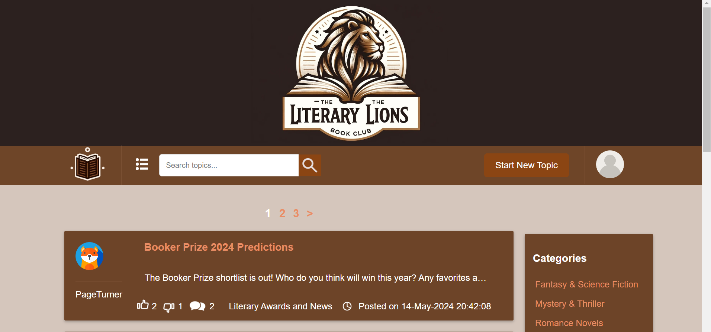
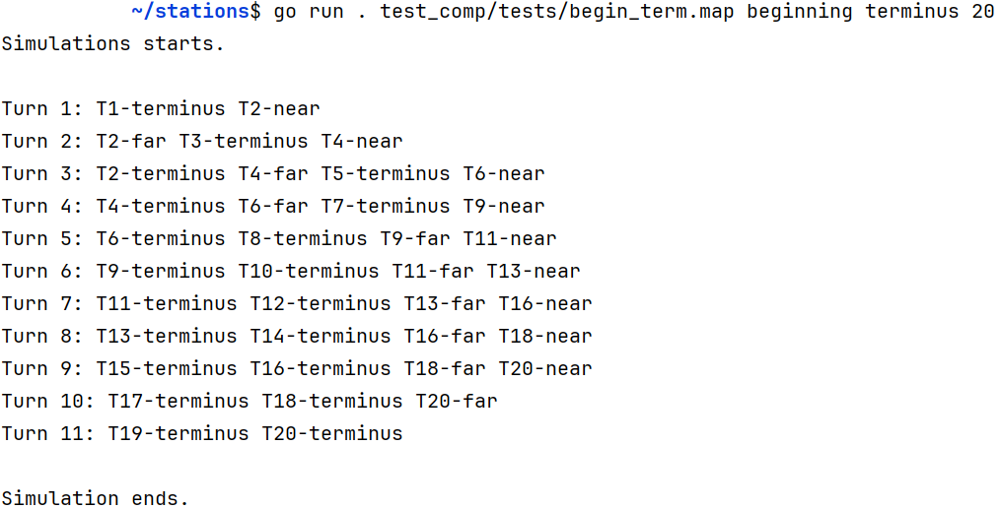
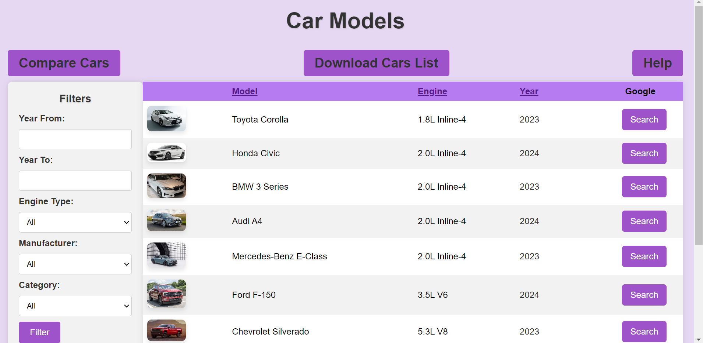
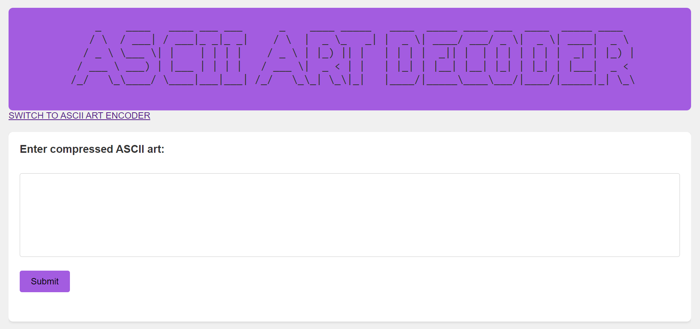
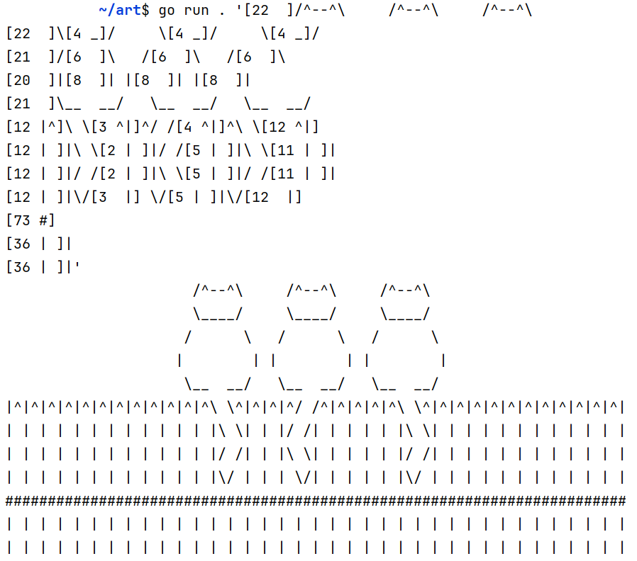
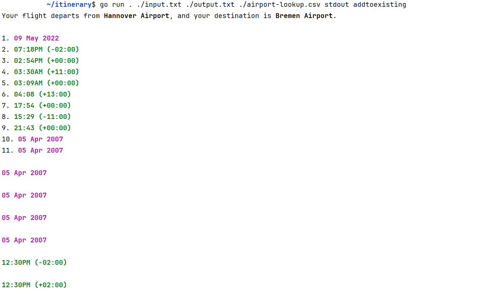
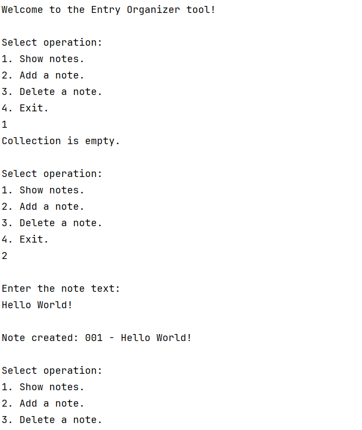

My Info
Hi there. My name is Denys. I'm a junior software developer.
Skills & Tools
The skills and tools I'm using in my work:

GoLang

JavaScript

HTML5

CSS3
GoLand

VS Code
Projects
-
Literary Lions Forum 
A web forum developed in Go, designed to support discussions for the "Literary Lions" book club. This platform allows users to create posts, categorize them, interact through comments, and use like/dislike features. It leverages SQLite for data management and includes Dockerization for efficient deployment. Registered users can authenticate with encrypted passwords, create and comment on posts, and filter content by categories and user preferences. The project was a group effort, where I primarily focused on backend development, and was completed with minimal use of JavaScript. Please note that my GitHub repository for this project is private as requested by Kood/Sisu. Interested parties should contact me via email, as provided in the contact section, to request access.
GitHub Repository -
Train Network Pathfinder 
A command-line application written in Go that simulates the movement of trains between stations along the shortest possible routes. This project reads a network map from a file, represented as a graph using an adjacency list, and identifies the minimal number of turns required to move trains from a start station to an end station. The pathfinder uses a modified BFS algorithm to find the shortest paths, filtering for unique routes, and assigns trains to the best paths based on a scoring system. The simulation iteratively moves trains until all reach their destination, displaying each movement turn-by-turn. This project demonstrates efficient pathfinding and train scheduling in a fixed-block rail system. Please note that my GitHub repository for this project is private as requested by Kood/Sisu. Interested parties should contact me via email, as provided in the contact section, to request access.
GitHub Repository -
Cars Viewer web application 
A Go-powered web application designed to showcase detailed information about various car models, manufacturers, and categories. The application interacts seamlessly with a Cars API, fetching and displaying data dynamically. It features advanced filtering and search options, and side-by-side car model comparisons. Users can click on specific car models to retrieve additional details, displayed in an intuitive format. The project also includes CSV data export and advanced sorting capabilities, providing a user-friendly interface and efficient server-side processing for an enhanced browsing experience. The project was completed without (or with absolute minimum) use of the JavaScript, as was required by the task. Please note that my GitHub repository for this project is private as requested by Kood/Sisu. Interested parties should contact me via email, as provided in the contact section, to request access.
GitHub Repository -
Art Decoder/Encoder Web Interface 
A Go-powered web application for encoding and decoding text based on a custom compression technique, designed for handling repetitive patterns in ASCII art and text. This web interface for the art-decoder task allows users to submit encoded strings for decoding or convert text back into an encoded format for easy sharing. The tool ensures input validation, checking for balanced brackets and correct format. With a responsive design, the interface is visually appealing and easy to use. The project combines Go's efficiency with web technologies to provide an interactive experience for text-based art manipulation. The project was completed without (or with absolute minimum) use of the JavaScript, as was required by the task. Please note that my GitHub repository for this project is private as requested by Kood/Sisu. Interested parties should contact me via email, as provided in the contact section, to request access.
GitHub Repository -
Command-line Art Encoding/Decoding Tool 
A versatile Go application for encoding and decoding strings based on a custom compression technique, ideal for handling repetitive patterns in ASCII art and text. This tool validates input, ensuring balanced brackets and proper format, and supports single-line and multi-line operations. Users can decode compressed strings from command-line arguments, files, and output results to the console or files. Similarly, it can encode input strings, supporting both single-line and multi-line formats, with outputs to the console or files. This project enhances string manipulation skills and provides efficient processing for text-based art. Please note that my GitHub repository for this project is private as requested by Kood/Sisu. Interested parties should contact me via email, as provided in the contact section, to request access.
GitHub Repository -
Itinerary Prettifier 
A command line tool in Go which can be used to transform text-based flight itineraries into customer-friendly formats. The tool reads itineraries, converts airport codes to names using a CSV lookup, and formats dates and times into more readable forms. The tool includes error handling to manage missing files and malformed data. Additionally, it supports dynamic column orders in the airport lookup file and offers optional output formatting to highlight key information. Please note that my GitHub repository for this project is private as requested by Kood/Sisu. Interested parties should contact me via email, as provided in the contact section, to request access.
GitHub Repository -
Introduction to the Go Programming Language 
Start of my software development career. Involves various tasks ranging from learning basic concepts of Golang to exploring complex algorithms. These tasks consist of standalone functions and two group tasks: an Encryption Tool and an Entry Organizer Tool. Please note that my GitHub repository for this project is private as requested by Kood/Sisu. Interested parties should contact me via email, as provided in the contact section, to request access.
GitHub Repository